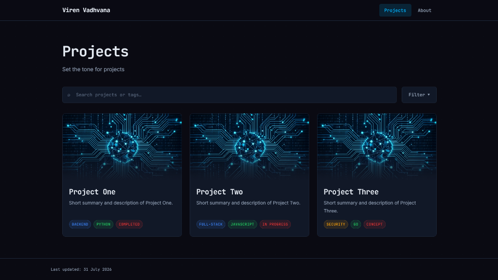

Portfolio
Overview
A simple, static website showcasing my projects and documenting their development lifecycle. Also, some personal info about my interests and academic/professional background.
Design
I built this portfolio out of the desire to showcase the full range of my projects and to document their lifecycle. Many of my projects are not publicly available on my GitHub to avoid any potential issues with IP or academic misconduct (and some are just old and bad!).
While I typically begin design stages researching similar websites for inspiration, I wanted to keep this portfolio simple and personable. I had two separate initial ideas: creating a CLI style and a more visual card-based approach. Although creative and handy for things like "get-CV", the CLI-based approach seemed less accessible to a general audience. The card-based approach was also much more visually appealing and conveyed more information.
Implementation
There's nothing particularly interesting about the implementation. I decided to build this website using vanilla CSS and JS to keep it lightweight and simple to deploy. I could have used something like a framework like React to make it more maintainable, but there are no plans to extend the website. I used Gemini to help me with a custom dark colour theme and a monospaced typography. There wasn't any need to use it for anything else.
I created custom tags to allow for projects to be filtered. These tags are defined in tags.js
and
organised by category. I added a dynamic search that allows users to search for projects by name or
description.
Additionally, the tags can also be searched if someone is looking for a particular skill quickly.
Reflections
I'm glad I chose a clean visual aesthetic over a CLI-based design. It's much more user-friendly and allows me to showcase my projects in a more engaging way. Due to the simplicity, I didn't face any real challenges (except colour matching and centering divs) and was able to get a working website quickly and focus on the "blogging" side. At the current scale, the two main tabs and search/filter functionality are more than adequate. There aren't any planned enhancements although it's regretabble I didn't showcase my projects on a "creative" site. The hope is that other projects convey that well enough.